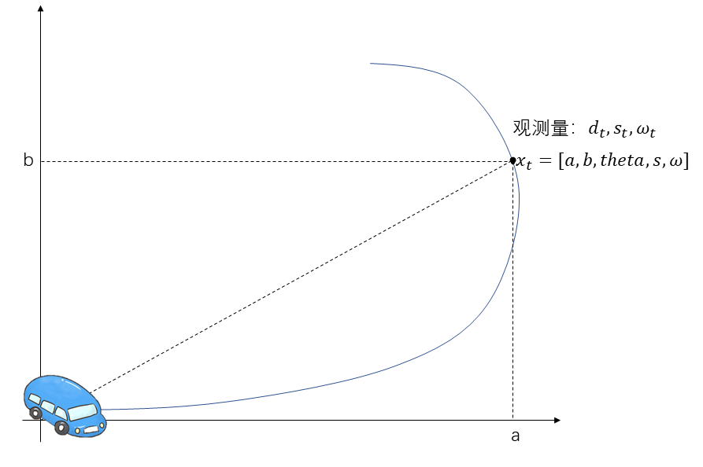
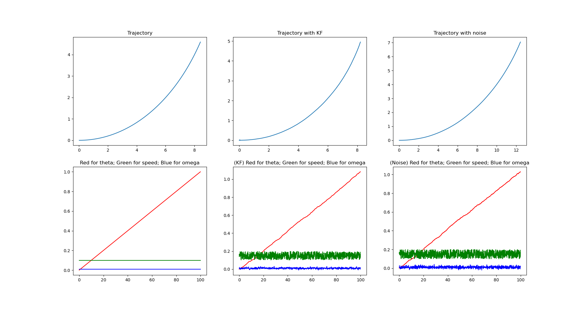
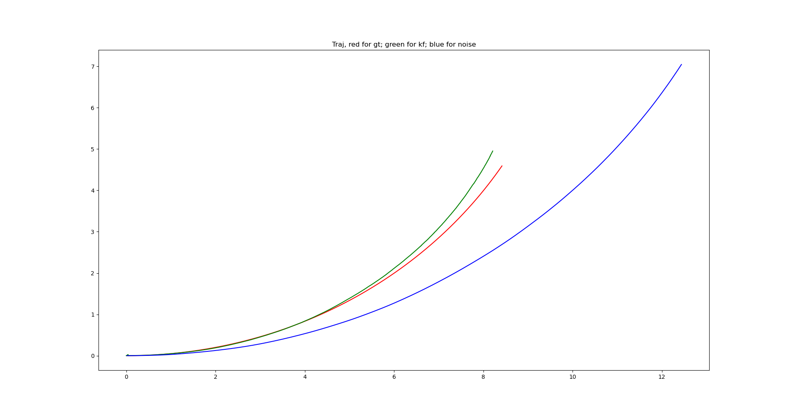

扩展卡尔曼滤波-含例子及代码
概述
卡尔曼滤波器在1960年被卡尔曼发明之后，被广泛应用在动态系统预测。在自动驾驶、机器人、AR领域等应用广泛。卡尔曼滤波器使用类似马尔可夫链的性质，假设系统状态只与上一时刻的系统状态有关。基础的卡尔曼滤波器使用线型方程对系统状态进行建模。为了能够应用到非线性系统，扩展卡尔曼滤波器利用泰勒展开，并只保留一次项，抛弃高次项，将非线性关系近似为线性关系。
这一篇文章对扩展卡尔曼滤波器（EKF:Extended Kalman Filter）的具体步骤和公式进行讲解。由于EKF是KF在非线性关系下的扩展，因此必须要先对卡尔曼滤波有必要的认识：
PS：上面的资料2原始论文较为学术化，资料1较为通俗易懂。维基百科中对公式推导部分较为完善。看其中任何一份资料都可以掌握对卡尔曼滤波的基本认识。
卡尔曼滤波器回顾
状态方程和观测方程 \[x_t = A_tx_{t-1}+B_tu_t+w_t\tag{1}\] \[z_t = Hx_t+v_t\tag{2}\] 其中\(x_t \in\mathbb{R}^n\)是系统状态向量，\(z_t\in\mathbb{R}^m\)是测量向量。\(w_t,v_t\)分别是过程噪声和观测噪声，且满足高斯分布 \[w_t\sim N(0,Q_t)\] \[v_t\sim N(0,R_t)\] 预测过程 \[\hat{x}_t^-=A_t\hat{x}_{t-1}^++B_tu_t\tag{3}\] \[P_t^-=A_tP_{t-1}^+A_t^T+Q_t\tag{4}\] 其中，\(P_t^-\)是先验状态的误差协方差矩阵 \[P_t^-\triangleq \mathbb{E}[(x_t-\hat{x}_t^-)(x_t-\hat{x}_t^-)^T]\]
更新过程 \[\tilde{y}_t=z_t-H_t\hat{x}_t^-\] \[S_t=H_tP_t^-H_t^T+R_t\] \[K_t=P_t^-H_t^TS_t^{-1}\tag{5}\] \[x_t^+=x_t^-+K_t\tilde{y}_t\tag{6}\] \[P_t^+=(I-K_tH_t)P_t^-\tag{7}\]
扩展卡尔曼滤波器
卡尔曼滤波器建立在线性的状态方程和测量方程也就是公式（1）和公式（2）。但是在实际应用中，更多的关系是非线形关系，比如如何从连续的角速度计算出车辆当前的姿态角等。为了能够利用基本卡尔曼滤波器的预测和更新过程，对于非线性的状态方程和观测方程，我们利用一阶的泰勒展开，将非线性公式近似为线性公式。
状态方程及观测方程
\[x_t=f(x_{t-1}, u_t, w_t)\tag{8}\] \[z_t=h(x_t,v_t)\tag{9}\] 公式（8-9）可以类比基础卡尔曼滤波器中的公式（1-2） ## 一阶泰勒展开 我们先假设已知\(t-1\)时刻滤波器的输出，也就是\(t-1\)时刻的状态后验，以及对应的协方差矩阵为 \[\hat{x}_{t-1}^+,P_{t-1}^+\] 同时，我们令\(x_t\)的先验为 \[\hat{x}_t^-=f(\hat{x}_{t-1}^+, u_t, 0)\tag{10}\] 公式（10）可类比公式（3）
对公式（8）在\(\hat{x}_{t}^-\)这一点做展开，并只保留一次项 \[x_t\approx \hat{x}_t^-+A_t(x_{t-1}-\hat{x}_{t-1}^+)+W_tw_t\tag{11}\] 同时，对公式（9）在\(\hat{z}_t^-=h(\hat{x}_t^-,0)\)这一点做泰勒展开，并只保留一次项 \[z_t\approx \hat{z}_t^-+H(x_t-\hat{x}_t^-)+V_tv_t\tag{12}\]
在公式（11）和公式（12）中： - \[A_{[i,j]}=\frac{\partial f_{i}}{\partial x_j}(\hat{x}_{t-1}^+, u_t, 0)\] - \[W_{[i,j]}=\frac{\partial f_i}{\partial w_j}(\hat{x}_{t-1}^+, u_t, 0)\] - \[H_{[i,j]}=\frac{\partial h_i}{\partial x_j}(\hat{x}_t^-,0)\] - \[V_{[i,j]}=\frac{\partial h_i}{\partial v_j}(\hat{x}_t^-,0)\]
经过泰勒展开后，我们得到了非线性的状态方程和观测方程的线性近似。同样，我们可以将公式（11-12）类比公式（1-2） ## 预测方程及状态协方差矩阵 \[\hat{x}_t^-=f(\hat{x}_{t-1}^+,u_t,0)\tag{13}\] \[P_t^-=A_tP_{t-1}^-A_t^T+W_tQ_tW_t^T\tag{14}\] 其中，公式（14）中的第二项，因为在线性近似方程（11）中，噪声项满足分布 \[W_tw_t\sim N(0, W_tQW_t^T)\] 公式（13-14）可以类比公式（3-4）
更新方程及卡尔曼增益
\[\tilde{y}_t=z_t-h(\hat{x}_t^-,0)\] \[S_t=H_tP_t^-H_t^T+V_tR_tV_t^T\] \[K_t=P_t^-H_t^TS_t^{-1}\tag{15}\] \[\hat{x}_t^+=\hat{x}_t^-+K_t\tilde{y_t}\tag{16}\] \[P_t^+=(I-K_tH_t)P_t^-\tag{17}\]
公式（15-17）可以类比公式（5-7） # 加性噪声（addtive noise）形式 前面我们将噪声加在EKF的状态方程和观测方程的变量中，一种简化的形式是将噪声加在非线性函数外，变成如下形式 \[x_t=f(x_{t-1}, u_t)+ w_t\tag{18}\] \[z_t=h(x_t)+v_t\tag{19}\] 这种加性噪声的形式带来的改变只需要将\(P_t^-,S_t\)中第二项的\(W_t,V_t\)去掉即可，其余都一样 # 总结 ## 理解 重点还是要理解卡尔曼滤波器的中心思想，如何对预测方程和观测方程建立联系，从系统状态先验和测量得出系统状态的后验。扩展卡尔曼滤波器的最核心之处是利用了一阶泰勒展开，对状态方程上一时刻的后验处展开，对测量方程在状态先验处展开，抛弃高阶项，使得非线性方程能够用线性方程近似。近似后就又可以利用卡尔曼滤波器中的过程进行分析。 ## 缺点 1. EKF毕竟只是做一阶近似，如果近似的点与实际的点偏差较大，一阶近似可能误差就会很大。 2. KF和EKF都假设了马尔可夫性质，也就是此刻的状态只与上一时刻的状态有关，实际中可能不是如此 3. KF和EKF如果在系统状态变量数量太大的情况下，公式中的各个矩阵会呈变量数的平方增长，因此不适合状态变量规模大的情况。
例子
详细代码可以移步：https://github.com/zeal-github/KalmanFilterTutorial ## 问题 假设有一个小车从原点出发，每个时间间隔\(\Delta T\)，车上的传感器可以输出车此时的速度\(v_t\)和角速度\(\omega_t\)。同时，在原点处有一个探测器，同样可以每个\(\Delta T\)的时间间隔，探测出车辆距离原点的距离\(d_t\)。 我们希望能够求出小车每一时刻对应的x轴和y轴坐标\(a_t,b_t\) 
状态向量和观测向量
我们另小车每一时刻的x，y坐标、此时小车的车身角度，速度和角速度这5个状态当作状态向量，于是 \[x_t=\begin{bmatrix}a_t\\b_t\\\theta_t\\v_t\\\omega_t\end{bmatrix}\] 同时，另观测向量为距离原点距离的平方、速度、角速度，于是 \[z_t=\begin{bmatrix}d_t^2\\v_t\\\omega_t\end{bmatrix}\]
加性噪声的形式
为了简化计算过程，我们这里将噪声项提到非线性方程外面，变成加性噪声的形式。也就是公式（18-19）
状态方程、观测方程即雅各比矩阵
状态方程及求导
小车的x坐标等于上一时刻的x坐标以及这个时间段小车行使过的距离在x轴的投影。小车在每个时间段形式的距离为\(v*\Delta T\)；距离在x轴的投影相当于乘上\(cos(\theta)\)。y坐标同理。角度则是每一时刻的角速度积分。于是，我们可以写出状态方程： \[f(x_t,u_t)=\begin{bmatrix}a_t+v_t*\Delta T*cos(\theta_t)\\ b_t+v_t*\Delta T*sin(\theta_t)\\ \theta_t+\omega_t*\Delta T\\ v_t\\ \omega_t\end{bmatrix}\]
将函数\(f\)相对于状态向量\(x_t\)求偏导数，可以得到 \[A_t=\begin{bmatrix}1,0,v_t*\Delta T*-sin(\theta_t),\Delta T*cos(\theta_t),0\\ 0,1,v_t*\Delta T*cos(\theta_t),\Delta T*sin(\theta_t),0\\ 0,0,1,0,\Delta T\\ 0,0,0,1,0\\ 0,0,0,0,1\end{bmatrix}\]
观测方程及求导
我们将小车与原点距离的平方、速度、角速度作为观测向量，即 \[h(x_t)=\begin{bmatrix}a_t^2+b_t^2\\ v_t\\ \omega_t\end{bmatrix}\] 将上述方程对状态方程求偏导数可以得到 \[H_t=\begin{bmatrix} 2*a_t, 2*b_t, 0, 0, 0\\ 0, 0, 0, 1, 0\\ 0, 0, 0, 0, 1 \end{bmatrix}\]
状态初始化
系统状态我们可以简单以全0向量作为初始值，即 \[x_0=[0,0,0,0,0]^T\] 另一个需要初始化的值是状态向量协方差矩阵\(P_0\)。经过实验发现在滤波过程对\(P_0\)的值似乎有点敏感，主要是不能只有对角线有值。实际上，如果在实际应用中，可以先采集一段数据计算出各个变量的初始值。这里将\(P_0\)设为如下值 \[P_0 = \begin{bmatrix} 10, 10, 1, 0, 0\\ 10, 10, 1, 0, 0\\ 1, 1, 0.1, 0, 0\\ 0, 0, 0, 1e-8, 0\\ 0, 0, 0, 0, 1e-8\\ \end{bmatrix}\]
过程噪声和观测噪声
过程噪声的协方差和观测噪声的协方差矩阵我们设置为一个较小的值即可。只不过这里的\(Q\)矩阵似乎比较敏感。而且由于我们用了速度和角速度做积分，而另外一个观测量距离并不能为角度提供更多的信息。因此，对于角度，这里并不能得到比简单的积分好很多的结果。 1
2
3
4
5
6
7
8
9
10
11
12
13
14
15# 过程噪声的协方差，需要调整的参数
Q = np.array([
[0.01, 0, 0, 0, 0],
[0, 0.01, 0, 0, 0],
[0, 0, 0.0001, 0, 0],
[0, 0, 0, 0.01, 0],
[0, 0, 0, 0, 0.01]
])
# 观测噪声协方差矩阵
R = np.array([
[0.0001, 0, 0],
[0., 0.0001, 0],
[0, 0, 0.0001]
]) # 观测噪声的协方差，需要调整的参数
卡尔曼滤波过程
有了上面的雅各比矩阵推导，就可以利用公式（13-17）进行滤波过程。过程只用了到一些矩阵乘法，十分简单。具体可以看代码。
结果
代码里生成了完美的观测量和带噪声的观测量，同时，利用直接的积分算法完美的状态和带噪声的状态，将其与卡尔曼滤波的结果做对比。结果如下 
将完美的轨迹、直接对带噪声信号积分的轨迹和卡尔曼滤波的结果可视化  可以看出，卡尔曼滤波的轨迹还是要更贴近真实的轨迹很多
思考
- 卡尔曼滤波的过程很像自动驾驶中多传感器融合的过程。每一个传感器的输出都是带噪声不完美的。同时，每一种传感器的输出形式都不一样。卡尔曼滤波可以将多传感器统一到状态向量的表达，同时求出一个满足各个传感器限制的最优量。比如例子中，实际上将距离原点的距离弥补到直接使用速度和角速度的积分结果中。
- 扩展卡尔曼滤波似乎对各个协方差的初始值和观测噪声的协方差更敏感，如何通过已有信息设置初始值目前还没有找到很好的方法。同时，在例子中使用加性噪声的形式，观测噪声协方差和观测噪声协方差均是常量。不知道用完整形式会不会更鲁棒。
- 如何设计状态向量和观测向量是门学问，不是简单思考就可以得出，还是得基于别人的公式和形式构造。